结论：探底回升但没止跌，仍是下跌中枢延伸，总仓 ≤4 成、少动多看。 上证收 3533.79（-1.22%），最低 3500.83 创 60 日新低、 收盘未站上 5 日线 3577.28；尾盘银行保险拉升，上证50 +0.45% 逆势。 温度 20 度、一/二类热点全无，国产算力掉出二类热点榜。 池内 9 只 + 焦点 2 只全部无方法买点，新增中线创业板ETF亦无买点。
五条判据逐条核：① 「今日单边下跌」 —— 上证 -1.22%、深成 -3.09%、创业板 -3.54%、中证1000 -4.89%，唯上证50 +0.45% 逆势 ✓；② 「尾盘银行和保险拉升」 —— 银行 +2.11%、保险 +0.39%，上证50 开 2730 → 收 2786 低开高走 ✓；③ 「上证50ETF尾盘量能异动放大翻红」 —— 510050 收 2.90 +0.59%、量比 3.63、额 243 亿（前日 26 亿）、份额 +44.9% ✓ 精确；④ 「中证500/1000ETF资金进入但没起色」 —— 份额 +13.6% / +16.6%，但两指数 -3.93%/-4.89% 收全天最低，抛压重 ✓；⑤ 「止跌通用方法是日线出有力度底分型且收盘站住5日均线」 —— 上证收 3533.79 未站上 MA5 3577.28，条件未满足（口径：多等一根日K过底分型第三根K线高点）。
结构是放量杀跌下的探底回升：两市 14,311 亿环比 +8.86%，跌 5236 家（94%）、跌超 5% 2863 家、跌停 58 家，是恐慌放量而非缩量止跌。上证距上方 3623.12 压力位仍差 89 点，但离上方下跌中枢太近，被拉回延续震荡概率高 → 「上涨空间被压缩」在日线也成立：上证50 翻红而中小盘继续杀（中证1000 -4.89%），赚钱效应集中在权重。
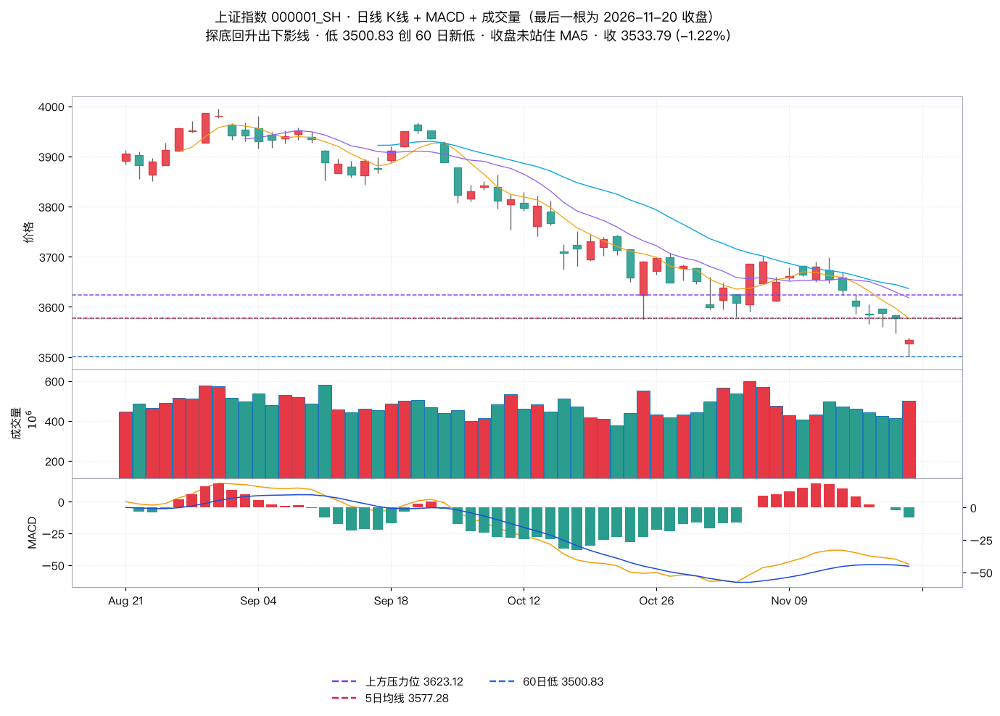
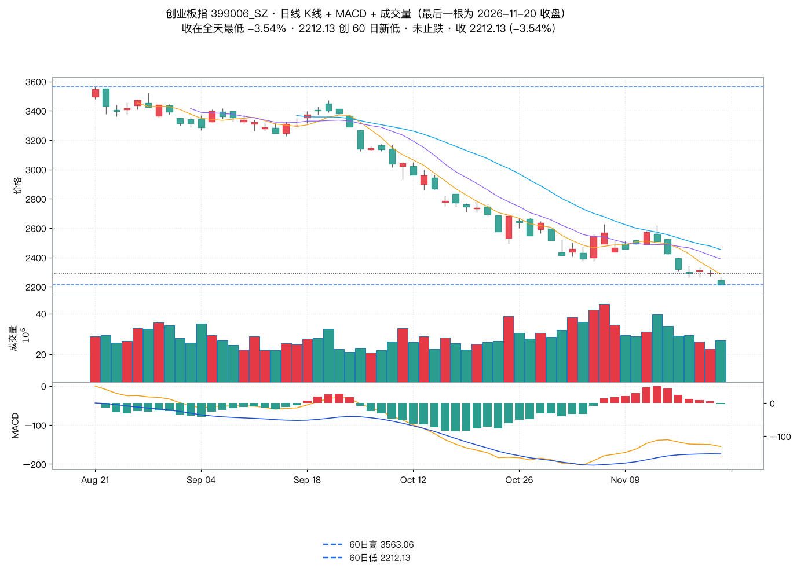
| 方向（自建篮子 / 行业榜） | 老师口径 | 实测（均值 · 涨跌家数 · 个股） |
|---|---|---|
| 银行 / 保险 | 「尾盘银行和保险等板块出现拉升」 | 银行 +2.11%、保险 +0.39%；国有大型银行Ⅲ +2.39%、股份制银行Ⅲ +1.05% |
| 高股息红利（电力/煤炭石油） | 「高股息红利内部细分要多对比」 | 红利篮子 +1.84%（7涨0跌）；电力 +2.41%、煤炭/石油 +1.68%——内部背离 |
| 元件 / PCB | 「元件有点动作，但本质维持1分钟下跌中枢震荡」 | 印制电路板 -0.10%、元件 -1.21%（仍跌）；涨停 6 家居首、主力净流入 |
| 国产算力 / 算力CPO | 「国产算力掉下二类热点榜，防范前期强势股补跌」 | 国产算力 -4.28%、算力CPO -2.31%；AI视频/传媒 -4.67%、机器人 -4.01% |
| 华为概念（华丰对照） | 「对比华胜天成后，华胜天成表现更强些」 | 华为概念篮子 -5.23%；华丰 -13.33% vs 华胜天成 +3.71%，差 17.04pp |
| 半导体 | （对照：权重逆势） | -3.06%；中芯国际 +2.63% 逆势、瑞芯微 -2.63% |
四条要记的：① 温度 20 度、热点全空 —— 涨 313 vs 跌 5236、跌停 58 家、跌超 5% 2863 家（51%），「临近冰点」✓；② 「国产算力掉下二类热点榜」当天兑现 —— 国产算力 -4.28%、华为概念 -5.23%，昨日涨停 23 只今日跌 16 只、跌超 5% 12 只；③ 红利是唯一有赚钱效应的方向 —— 银行 +2.11%、电力 +2.41%，但煤炭开采 -1.08% 与煤炭/石油篮子 +1.68% 背离；④ 元件有资金没指数 —— 涨停 6 家居首、主力净流入 +18.72 亿，但板块指数仍跌，即「有动作但结构没变」。
| 标的 / 题材 | 收盘 | 老师定性（老师口径） | 关键位 | 实测印证（日线触达） | 动作 |
|---|---|---|---|---|---|
| 药明康德 | 140.80 (-2.49%) | 稳健等突破 157.8 出 15 分钟底分型三买 | 157.8 | 收 140.80 -2.49%，低 137.52 破昨低；距 157.8 差 17.00 | 等 |
| 中国船舶 | 34.50 (-0.58%) | 等突破压力 36.75 出 15 分钟底分型三买 | 36.75 | 低 33.57 → 收 34.50 -0.58%（收日内高位，尾盘拉升）；距 36.75 差 2.25 | 等 |
| 瑞芯微 | 184.44 (-2.63%) | 激进等日线底分型+小共振中枢；稳健等突破上沿高点出日线三买 | — | 低 181.11 破昨低，续创新低；底分型未出，距 MA5 197.00 还有 12.56 | 等 |
| 伊利股份 | 33.35 (+1.34%) | 上涨延伸不追涨；跌破 31.9 顶背驰大概率形成 | 31.9 | 高 33.51 创 60 日新高，收 33.35 +1.34%；距 31.9 还有 1.45 元 | 不追 |
| 海天瑞声 | 86.50 (-0.93%) | 继续等 15 分钟二买止跌信号 | — | 盘中 94.88 异动后收 86.50 -0.93%，低 82.02 破昨低；距 60 日低 13.0% | 等 |
| 创业板ETF易方达 | 2.23 (-3.38%) | 跌破出止跌底背驰+日线底分型站 MA5；浅调等突破 2.28 出底分型回抽 | 2.28 | 最高 2.28 恰好触及未突破，收 2.23 -3.38% 创 60 日新低；未站 MA5 2.30；额 154 亿 | 等 |
| 兆易创新 | 205.88 (-5.91%) | 稳健等收复 233 出回抽三买；激进等突破 224.6 出底分型回抽 | 233 / 224.6 | 低 205.77 创 60 日新低，收 205.88 -5.91%；距 233 差 27.12、224.6 差 18.72 | 等 |
| 华丰科技 | 86.04 (-13.33%) | 等日线有力度底分型止跌；跌破 80.6 不再关注 | 80.6 | -13.33% 大阴线，收 86.04、低 85.60；距支撑 80.6 差 5.44 | 等 |
| 中芯国际 | 125.46 (+2.63%) | 延续向上不追涨，等日线顶分型回抽 | — | 收 125.46 +2.63%，高 125.68 逼近 60 日高（差 4.21） | 不追 |
| 中际旭创 | 393.20 (-3.72%) | 走势没见底 | — | 收 393.20 -3.72%，低 385.13 续创新低 | 等 |
| 长鑫科技 | 35.16 (-6.24%) | 耐心等止跌信号 | — | 收 35.16 -6.24%，收全天最低、创 60 日新低 | 等 |
| 华胜天成 | 17.32 (+3.71%) | 老师对照口径：表现强于华丰科技 | — | 收 17.32 +3.71%，高 18.23 逼近 60 日高，强于华丰 17.04pp | 参照 |
三条要记的：① 池子变了 —— 中线由 5 只增至 6 只（新增创业板ETF易方达），短线仍 3 只，焦点品种中际旭创、长鑫科技均无买点；② 全部「无方法买点」= 没有进场信号，只留触发条件，别把「条件」读成「可以试」；③ 最接近触发的是华丰科技：距支撑 80.6 差 5.44 元，跌破即不再关注；华胜天成 +3.71% 强于华丰 -13.33%，老师「华胜天成更强」获数据确认。
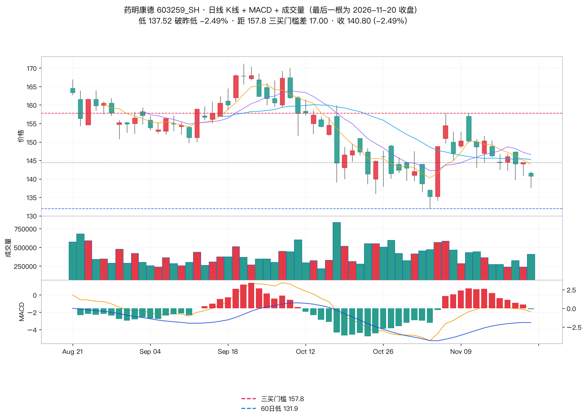
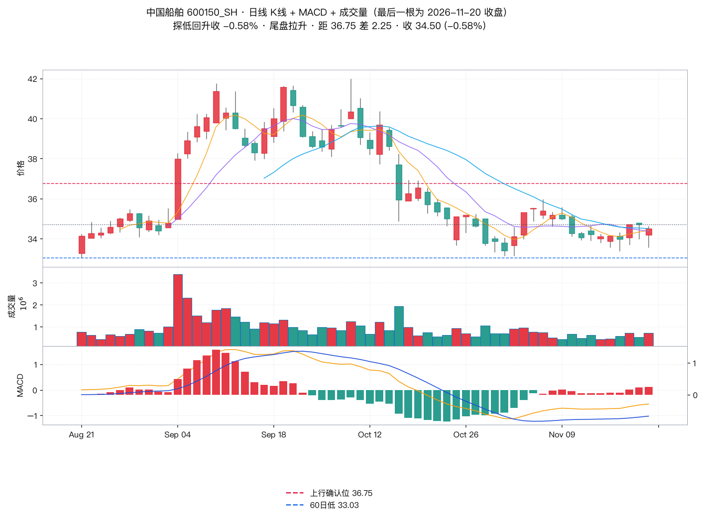
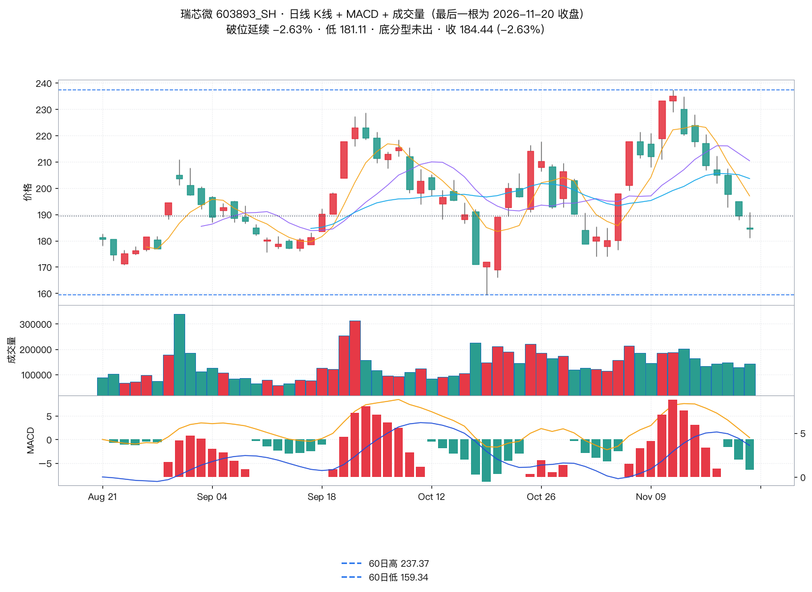
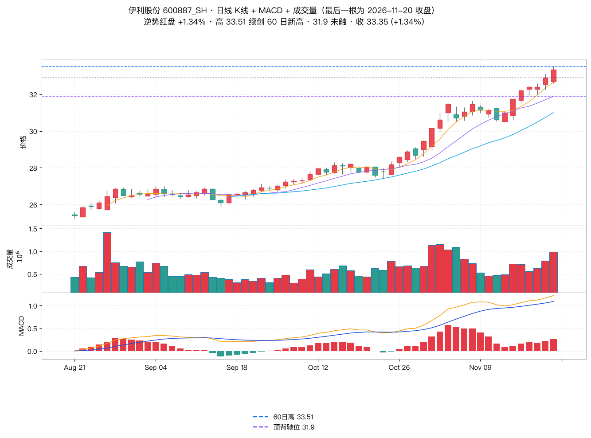
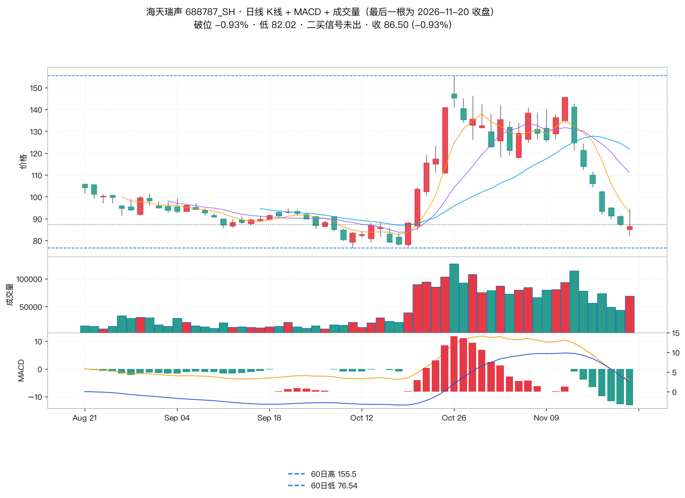
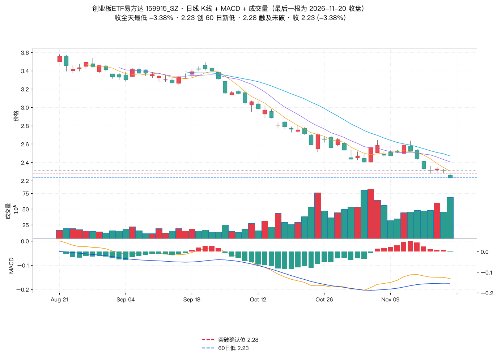
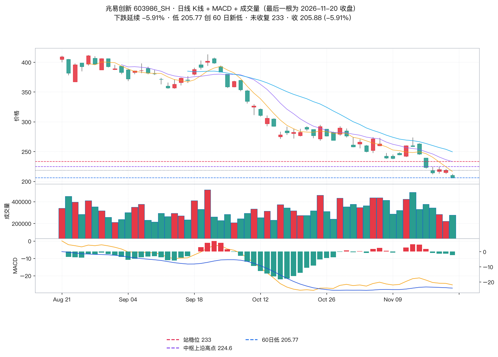
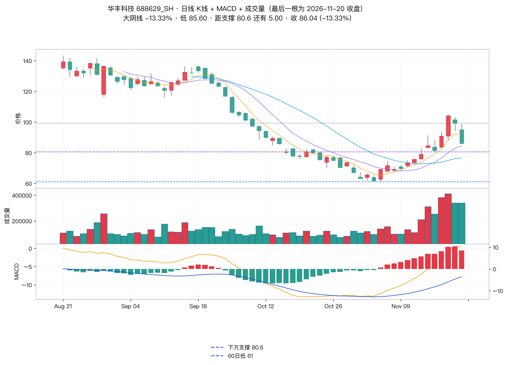
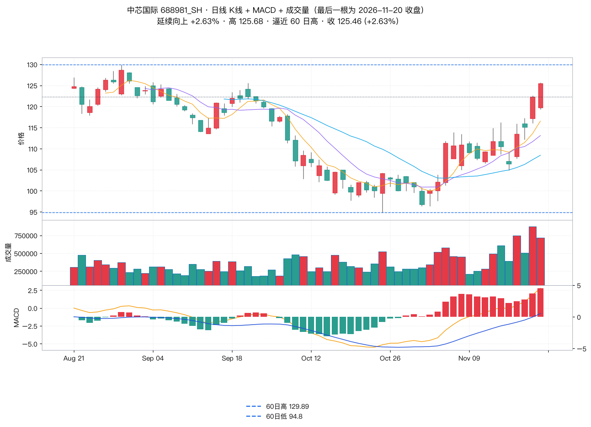
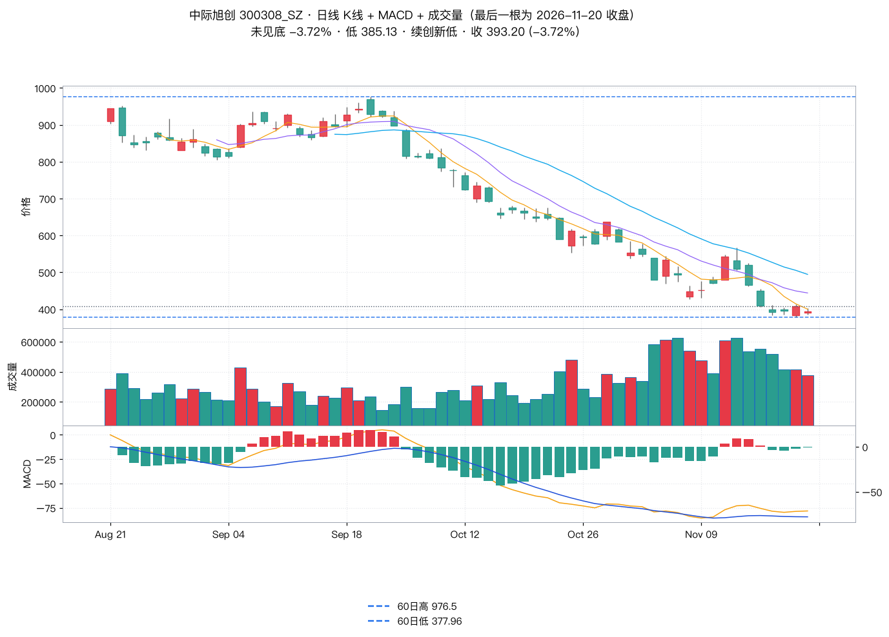
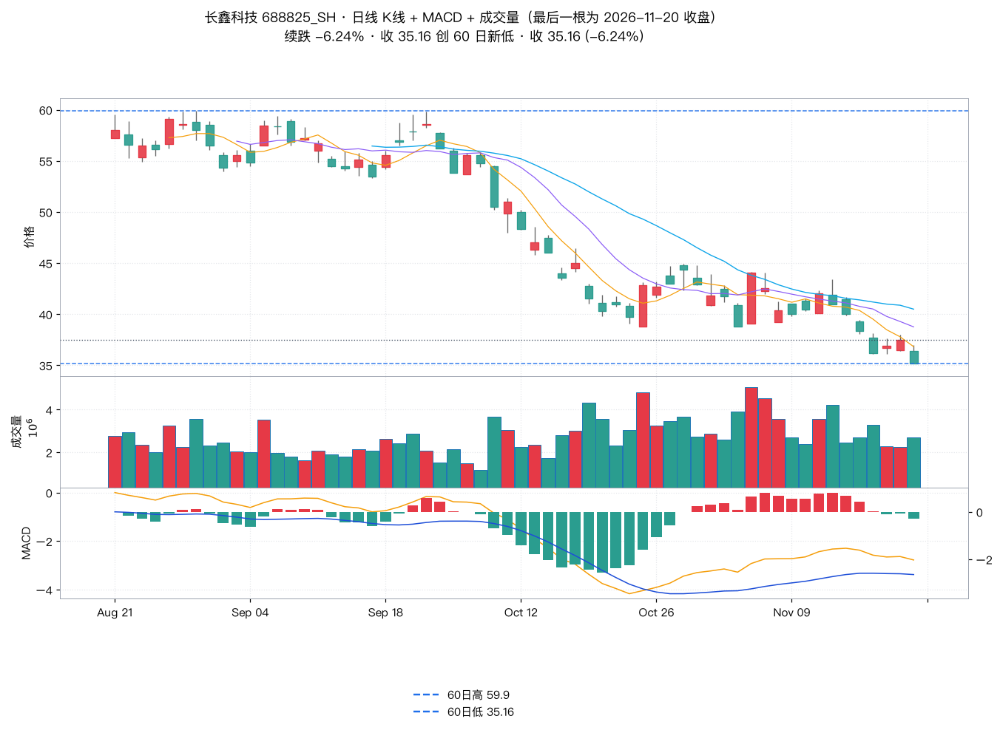
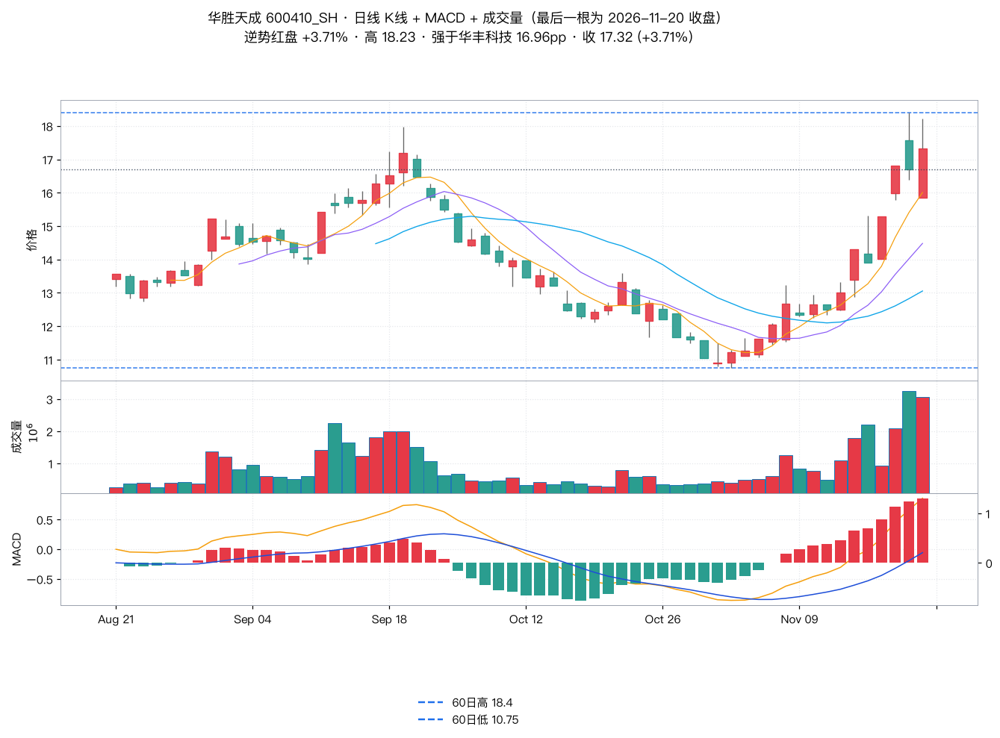
| 老师原文 | 实测 | 判定 |
|---|---|---|
| 「涨幅榜靠前的主要是银行和保险」 | 行业榜前两位是其他数字媒体 +15.00%、视频媒体 +3.19%（成分各 2/1 只），国有大型银行Ⅲ +2.39% 列第三；大盘口径银行 +2.11%、保险 +0.39% | 口径差异 |
| 「元件板块有点动作」 | 元件 -1.21%、印制电路板 -0.10% 仍跌；「有动作」仅体现在 6 家涨停与主力净流入 | 仅资金面成立 |
| 「药明康德走势抗跌」 | 今日 -2.49% 弱于上证 -1.22%，但强于化学制药 -4.80% | 相对医药成立 |
其余判据当日一致 ✓：单边下跌、银行保险尾盘拉升、上证50ETF 放量翻红、中证500/1000ETF 资金进入没起色、止跌条件未满足、温度 20 度热点全空、国产算力掉榜、强势股补跌、元件有动作。
来源：都业华《高级班》2026-11-20 收评，执业编号 A0400626100004。仅供参考，不作为买卖依据，据此操作风险自担。投资有风险，入市需谨慎！
口径：Tushare 日线（前复权）+ 指数/ETF 日线；涨跌家数/成交额/涨跌停取 daily 全量 5572 只；涨停/跌停/炸板取东财 push2ex（28/58/7）；行业板块取东财 push2 榜；ETF 资金进入用 fund_share 份额核验；板块为自建篮子均值。缠论定性按老师口径引用，不声称复算过 15 分钟结构；关键位用日线触达判据。